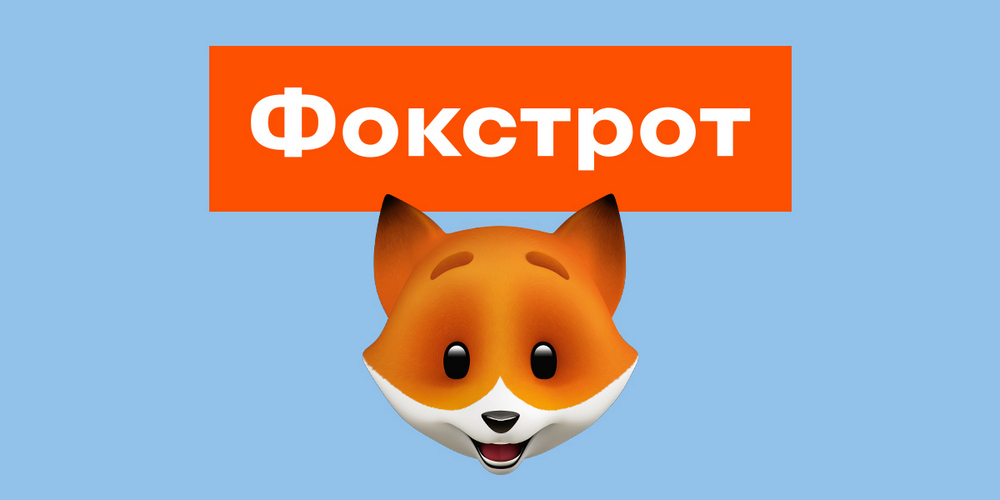
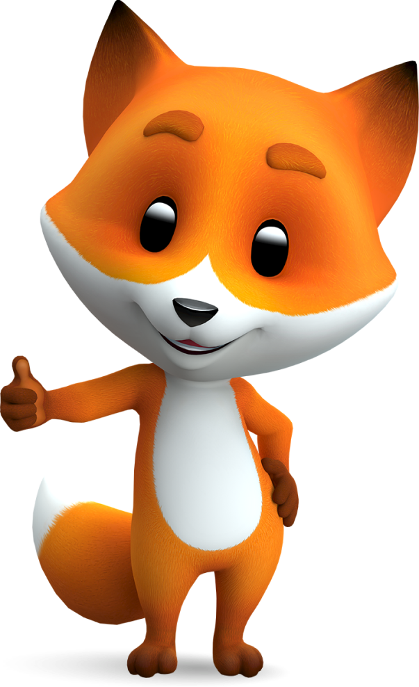

Фокстрот
Паспорт Бренду
Аналіз візуальної ідентифікації, емоційного позиціонування та ринкової екосистеми в Україні

Візуальна Айдентика
Логотип «Фокстрот» поєднує сучасний, лаконічний шрифт та впізнаваний графічний елемент — усміхнену лисицю (Фоксі).
Цей фірмовий персонаж уособлює кмітливість, дружність, спритність та максимальну орієнтацію на потреби клієнта.
Головні кольори бренду: помаранчевий (енергія, тепло, інновації) та білий (чистота, прозорість). Сучасний візуальний стиль транслює відкритість та технологічність у кожній точці контакту.
Емоційне Позиціонування
Дружній експерт з техніки
Бренд позиціонує себе як надійного та зрозумілого помічника, який завжди готовий допомогти розібратися у складному світі новітніх технологій.
Покращення якості життя
Головний емоційний меседж компанії спрямований на те, щоб надихати клієнтів жити яскравіше та комфортніше завдяки правильному вибору техніки.
Омніканальна турбота
Емпатія створює безшовний досвід: клієнт отримує однаково високий рівень емоційної підтримки як під час вибору онлайн, так і в офлайн-магазинах.
Екосистема: Конкуренти
Прямі конкуренти
Гравці на кшталт Comfy та Eldorado. Основна боротьба ведеться за лідерство в омніканальному ритейлі, частку офлайн-присутності та інновації у клієнтському сервісі.
Маркетплейси
Rozetka. Наймасштабніший гравець в українському е-commerce сегменті, який активно змагається за загальний онлайн-трафік та максимальну ширину асортименту.
Нішеві мережі
Мережі типу Цитрус чи Мoyo. Їх фокус зосереджений на портативній електроніці, гаджетах та формуванні емоційного досвіду для молоді.
Екосистема: Партнери
E-commerce платформи та Маркетплейси
Стратегічні кроки включають партнерство з такими майданчиками, як «Алло», Kasta та інтеграція в топомаркет. Ця колаборація дозволяє виходити на нові аудиторії та масштабувати омніканальну стратегію.
Фінансові та логістичні оператори
Системна співпраця з банками для надання вигідних умов кредитування. Надійне стратегічне партнерство з топовими поштовими операторами (зокрема «Нова Пошта») гарантує швидку та безпечну доставку.

Ключові Постачальники
Побутова техніка
Прямі контракти з глобальними вендорами (Bosch, Gorenje, Beko) гарантують офіційну якість продукції.
Споживча електроніка
Тісна співпраця з техногігантами (Samsung, Apple, Lenovo) для забезпечення швидкого доступу до новинок.
Смарт-рішення
Постачання інноваційних екосистемних рішень та пристроїв для розумного дому, що відповідають трендам.
Ринок електроніки України
Динаміка та Виклики
Ринок побутової техніки та електроніки в Україні відрізняється надвисокою конкуренцією та швидким переходом до онлайн-форматів. Споживачі шукають не лише товар, але й максимальну надійність та експертизу.
Особливим трендом останнього часу став підвищений попит на енергонезалежні рішення (зарядні станції, павербанки) та енергоефективну смарт-техніку.
Бренд успішно утримує лідерські позиції завдяки гнучкості асортименту та інноваціям.
Дякую за увагу!
Готовий відповісти на ваші запитання щодо презентації.